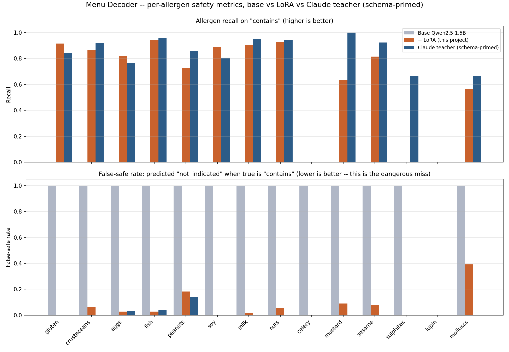
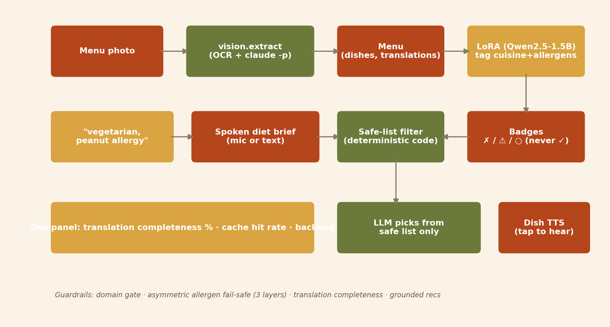

Local LoRA fine-tune, benchmarked against Claude
Menu Decoder reads a photographed menu, translates each dish, and tags it
for cuisine, 14 EU allergens, spice and vegetarian or vegan. The tagger is
Qwen2.5-1.5B with a LoRA adapter trained to emit the whole tag set as JSON
from a prompt as short as Dish: Pad Thai. On 303 held-out
rows it returns valid JSON every time, gets the cuisine right 99.3% of the
time, and catches 69.3% of allergens a dish contains. Claude given the same
bare prompt doesn't attempt the task. Claude given the full schema does
better on allergens: 79.2% recall and a 1.7% false-safe rate, against the
fine-tune's 7.3%.
Valid tag JSON from base Qwen2.5-1.5B before and after the LoRA fine-tune, on the same bare prompt.
Cuisine accuracy across 15 cuisines, against 81.0% for Claude given the full schema.
False-safe rate, LoRA against schema-primed Claude: how often a dish that contains an allergen was tagged "not indicated".
Independent layers that bias the app toward warning: the tagging rubric, the badge renderer and a code filter before recommendations.
Benchmark
Base and LoRA ran on the full 303-row test set; Claude ran on a 100-row
subsample. Allergen recall is measured on dishes whose label is
contains. A false-safe is a contains dish tagged
not_indicated; a may still warns, so it doesn't
count.
| System | N | Valid JSON | Cuisine | Allergen recall | False-safe | Latency |
|---|---|---|---|---|---|---|
| Base Qwen2.5-1.5B, bare prompt | 303 | 0.0% | 0.0% | 0.0% | 100.0% | 5.4 s |
| Qwen2.5-1.5B + LoRA, bare prompt | 303 | 100.0% | 99.3% | 69.3% | 7.3% | 6.7 s |
| Claude, bare prompt | 100 | 94.0% | 43.0% | 0.0% | 100.0% | 16.5 s |
| Claude, schema in prompt | 100 | 99.0% | 81.0% | 79.2% | 1.7% | 13.4 s |
Given only Dish: X., Claude answers a different question,
"tell me about this dish", and returns valid JSON with its own keys
(region, main_ingredients,
flavor_profile). None of them match the scored fields, so that
row is zero by construction. With src/decoder.py's tagging
rubric and a JSON format description appended, and no examples or answers,
Claude beats the fine-tune on allergens. What the fine-tune has going for
it is that the 14-allergen contract lives in its weights, so the prompt can
be one line, and it runs locally at no cost per call.
Per allergen
An average would hide the dangerous cases, so the benchmark reports each allergen on its own. The fine-tune is close to Claude on the common allergens and falls behind on the rarer ones.
| Allergen | Contains (N) | LoRA recall | LoRA false-safe | Claude recall | Claude false-safe |
|---|---|---|---|---|---|
| Gluten | 130 | 91.5% | 0.0% | 84.4% | 0.0% |
| Milk | 103 | 90.3% | 1.9% | 95.2% | 0.0% |
| Eggs | 71 | 81.7% | 2.8% | 76.7% | 3.3% |
| Fish | 71 | 94.4% | 2.8% | 96.0% | 4.0% |
| Nuts | 68 | 92.7% | 5.9% | 94.1% | 0.0% |
| Soy | 63 | 88.9% | 0.0% | 80.8% | 0.0% |
| Crustaceans | 45 | 86.7% | 6.7% | 91.7% | 0.0% |
| Sesame | 38 | 81.6% | 7.9% | 92.3% | 0.0% |
| Molluscs | 23 | 56.5% | 39.1% | 66.7% | 0.0% |
| Peanuts | 22 | 72.7% | 18.2% | 85.7% | 14.3% |
| Mustard | 11 | 63.6% | 9.1% | 100.0% | 0.0% |
| Sulphites | 11 | 0.0% | 0.0% | 66.7% | 0.0% |
| Celery | 2 | 0.0% | 0.0% | 0.0% | 0.0% |
From eval/benchmark.md. N counts true contains cases in the 303-row set; Claude's figures come from its 100-row subsample. Lupin had no contains cases.
Molluscs is the worst result: the fine-tune tagged 39.1% of mollusc dishes
"not indicated". For sulphites, recall is 0% with no false-safes, which
means every sulphite dish got may: a warning, but not a
confident one.

Fail-safe design
Because the tagger misses some allergens, the app around it assumes it
will. The tagging rubric tells the model to answer may
whenever an allergen is plausible in a typical preparation, such as sesame
oil in many Asian dishes or gluten in most sauces and breading. The badge
renderer in src/safelist.py maps the three levels to fixed
strings and has no entry that shows a green check:
Before the recommendation step, filter_safe_dishes removes
every dish marked contains or may for any of the
user's allergens, and every dish that fails a stated vegetarian or vegan
diet. The LLM picks two or three dishes from what is left and cannot bring
a filtered dish back. Lines the vision step can't read stay on the menu,
flagged as unreadable.

Training
scripts/gen_dishes.py generated 6,750 rows with
claude -p: 15 cuisines, 150 dishes each, three prompt variants
per dish (name only, name with description, original script with
translation, such as ผัดไทย (Pad Thai)). The three variants of
a dish share a split, so the model can't memorize a dish from one variant
and get credit for it on another. The row IDs are hashes, so
training/prep_tagger.py rebuilds the generator's item list to
recover each row's dish family. That gives 2,250 families and 6,096 train,
351 validation and 303 test rows, with the leakage check passing.
Training used MLX on Apple Silicon: batch 4, 12 LoRA layers, 800 iterations, learning rate 1.5e-4, sequence length 768, chosen after measuring a median target of about 204 tokens.
Limitations
Every label in the benchmark was generated by Claude, and Claude is also one of the systems being scored. The spec requires a human spot-check of about 60 dishes stratified across cuisines; it has not been done. Until it is, the Claude rows measure agreement with Claude's own labels, and every figure here is about synthetic data.
The first Claude run was contaminated. claude -p ran inside the
repo, and 8 of the first 100 answers read the training code to find the
schema. Turning tools off made it worse: answers turned into narrated tool
calls. The fix was to run the CLI from a scratch directory outside the
repo, and the rerun showed no contaminated answers.
The LoRA path in the app was also broken at first. It parsed
mlx_lm.generate's raw output, which wraps the JSON in a banner,
and expected a dish_id the model never produces, so every call
fell back to the default. Both are fixed and the 10 tests pass. This is not
a medical device; confirm allergens with restaurant staff.
Build
mlx_lm.generate; a batched Gemini call is the fallback when no adapter is presentMenu: language, sections, dishes, translations, prices(original_text, language)